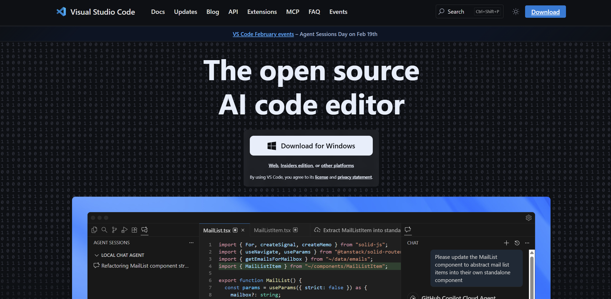
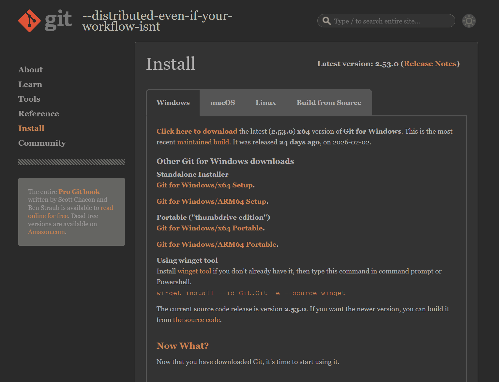
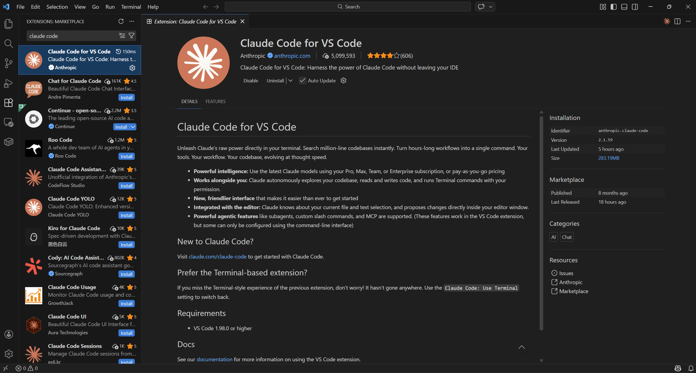
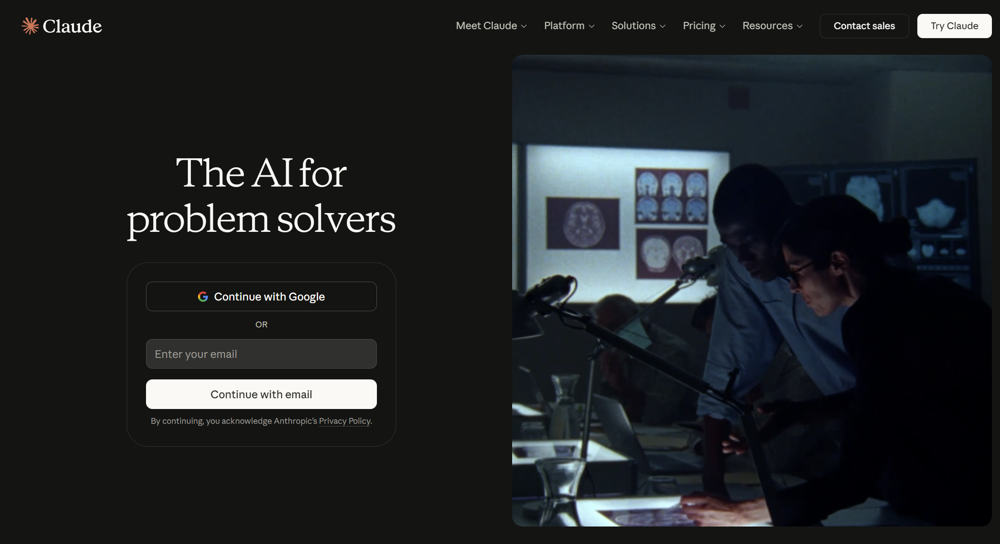
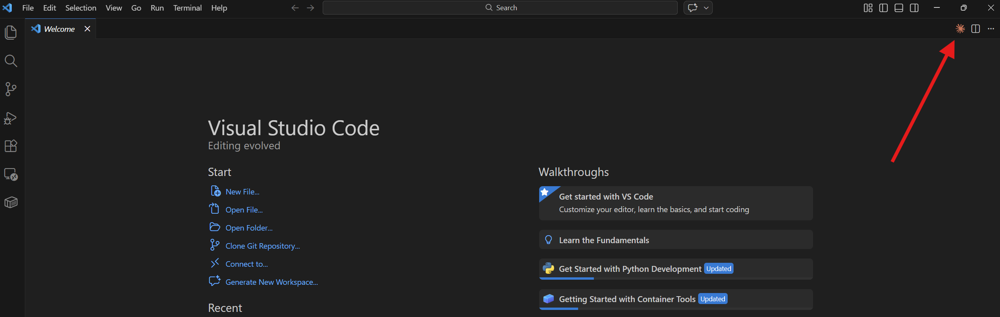
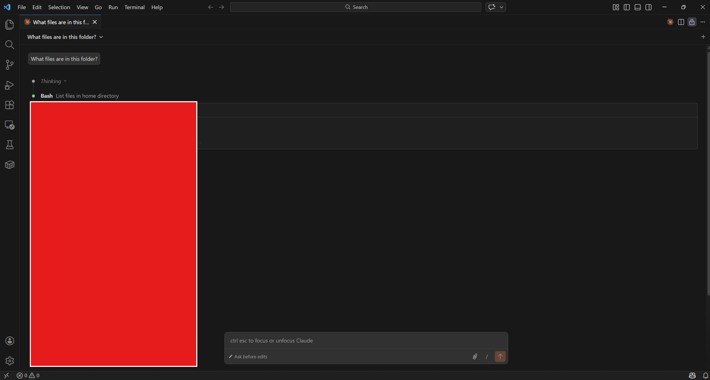

VS Code (או בשמו המלא: Visual Studio Code) הוא תוכנה חינמית של מיקרוסופט.
זוהי תוכנה שבה אפשר לפתוח קבצים, לערוך אותם, ולעבוד על פרויקטים.
היא פופולרית מאוד בעולם הטכנולוגיה, ויש לה מיליוני משתמשים.
אל תיבהלו מהשם - לא צריך לדעת לכתוב קוד כדי להשתמש בה!
מה זה העוזר החכם (Claude Code)?
Claude Code הוא עוזר חכם מבוסס בינה מלאכותית, שיושב בתוך VS Code.
הוא נבנה על ידי חברת Anthropic.
בניגוד לצ'אטבוט רגיל, Claude Code יכול גם לכתוב קוד בשבילכם,
לערוך קבצים, להריץ פקודות, ולבנות פרויקטים שלמים - הכל לבד.
אתם רק צריכים לתאר מה אתם רוצים במילים שלכם,
והוא עושה את כל העבודה הטכנית.
לדוגמה: "תבנה לי אתר אינטרנט" או "תתקן לי את השגיאה הזו" -
והוא יעשה את זה בשבילכם.
למה הצירוף הזה שימושי?
אתם מתארים מה אתם רוצים, ו-Claude Code כותב את הקוד במקומכם
הוא יכול לבנות פרויקטים שלמים - אתרים, כלים, אוטומציות
הוא מסביר מה הוא עשה ולמה, כך שאפשר גם ללמוד תוך כדי
הוא מזהה בעיות ומתקן אותן לבד, בלי שתצטרכו להבין פרטים טכניים
הוא עובד ישירות על הקבצים שלכם - לא צריך להעתיק ולהדביק
⚠️ שימו לב
Claude Code הוא כלי בתשלום. צריך מנוי בעלות 20 דולר לחודש לפחות.
התוסף עצמו חינמי להתקנה, אבל השימוש בו דורש חשבון בתשלום.
2
דרישות מערכת - מה צריך לפני שמתחילים
דרישות חומרה ותוכנה
לפני שמתחילים, ודאו שיש לכם את הדברים הבאים:
דרישה
פרטים
מערכת הפעלה
Windows 10 / Windows 11
זיכרון
4 GB לפחות, 16 GB מומלץ
אינטרנט
חיבור אינטרנט פעיל
VS Code
גרסה 1.98.0 ומעלה
Git for Windows
חובה! ראו הסבר למטה
חשבון
מנוי בתשלום
למה צריך את כלי העזר הזה (Git)?
Git for Windows הוא תוכנה חינמית שצריך להתקין ב-Windows.
Claude Code משתמש בתוכנה הזו ברקע, מאחורי הקלעים.
אתם לא צריכים ללמוד איך להשתמש ב-Git - רק צריך שהוא יהיה מותקן במחשב.
ההתקנה לוקחת 2 דקות ועושים אותה פעם אחת בלבד.
💡 טיפ
אם אתם לא בטוחים אם Git מותקן אצלכם, לא נורא - פשוט התקינו אותו.
אם הוא כבר מותקן, זה לא יגרום נזק.
אפשרויות מנוי (תמחור)
כדי להשתמש ב-Claude Code צריך מנוי בתשלום. הנה האפשרויות:
שם המנוי
מחיר
המלצה
Claude Pro
20 דולר לחודש
שימוש מוגבל
Claude Max 5x
100 דולר לחודש
מומלץ!
Claude Max 20x
200 דולר לחודש
שימוש אינטנסיבי
3
התקנת עורך הקוד (VS Code)
אם VS Code כבר מותקן אצלכם, דלגו ישר לשלב הבא. אם לא - בצעו את השלבים הבאים:
הורדה והתקנה של עורך הקוד
פתחו את הדפדפן שלכם (כמו Chrome או Edge)
גלשו לאתר:
https://code.visualstudio.com
לחצו על הכפתור הגדול "Download for Windows"

📸
צילום מסך: עמוד ההורדה של VS Code כפתור Download for Windows במרכז הדף
'">
עמוד ההורדה של VS Code - לחצו על הכפתור הכחול הגדול
הריצו את הקובץ שהורדתם (לחצו עליו פעמיים)
לחצו "Next" בכל השלבים של אשף ההתקנה ואז "Finish"
VS Code יפתח אוטומטית!
💡 טיפ
אם מופיעה שאלה איזה סוג התקנה רוצים (User Setup / System Setup)
בחרו User Setup - זו האפשרות הפשוטה שלא דורשת הרשאות מיוחדות.
התקנת כלי עזר נדרש (Git for Windows)
עכשיו נתקין את Git for Windows.
כפי שהסברנו, Claude Code צריך את התוכנה הזו כדי לעבוד.
ההתקנה פשוטה ומהירה:
גלשו לאתר:
https://git-scm.com/downloads/win

📸
צילום מסך: עמוד ההורדה של Git for Windows כפתור Click here to download
'">
עמוד ההורדה של Git for Windows - לחצו על כפתור ההורדה
לחצו על "Click here to download"
הריצו את קובץ ההתקנה ולחצו Next בכל השלבים
לא צריך לשנות שום הגדרה - הכל מוגדר כמו שצריך מראש
⚠️ שימו לב
Git for Windows נדרש גם אם אתם לא מתכוונים להשתמש ב-Git עצמו.
Claude Code משתמש בו ברקע ולא יעבוד בלעדיו.
4
התקנת התוסף (Claude Code)
עכשיו נתקין את התוסף של Claude Code בתוך VS Code.
תוסף (Extension) הוא כמו אפליקציה קטנה שמוסיפה יכולות חדשות לתוכנה.
פתחו את VS Code
לחצו על צירוף המקשים Ctrl+Shift+X כדי לפתוח את חלון התוספים
בשדה החיפוש שנפתח למעלה, הקלידו:
Claude Code
מצאו את התוסף של Anthropic ולחצו "Install"

📸
צילום מסך: חלון התוספים של VS Code חיפוש Claude Code ולחיצה על Install
'">
חלון התוספים - חפשו "Claude Code" ולחצו Install על התוסף של Anthropic
⚠️ חשוב!
ודאו שהמפרסם (Publisher) של התוסף הוא Anthropic - זה התוסף הרשמי והבטוח.
יש תוספים לא רשמיים עם שמות דומים.
חכו כמה שניות עד שההתקנה מסתיימת
ייתכן שתתבקשו לאשר אמון במפרסם (Trust Publisher) - לחצו אישור
💡 טיפ
אם התוסף לא מופיע אחרי ההתקנה, פשוט סגרו את VS Code ופתחו אותו מחדש.
5
הגדרת חשבון והתחברות
כדי להשתמש ב-Claude Code, צריך חשבון Anthropic עם מנוי בתשלום.
ההתחברות פשוטה ומתבצעת דרך הדפדפן.
יצירת חשבון (אם אין לכם)
גלשו לאתר:
https://claude.ai

📸
צילום מסך: עמוד ההרשמה של claude.ai כפתורי Sign Up ו-Log In
'">
עמוד ההרשמה של Claude - לחצו Sign Up
לחצו על "Sign Up"
הזינו כתובת אימייל וצרו סיסמה, או התחברו עם חשבון גוגל
אשרו את האימייל שנשלח אליכם
שדרגו למנוי Pro (או גבוה יותר) דרך הגדרות החשבון
התחברות בעורך הקוד
אחרי שיש לכם חשבון עם מנוי, ההתחברות אוטומטית:
פתחו את Claude Code ב-VS Code (נסביר בשלב הבא)
הדפדפן שלכם ייפתח אוטומטית
התחברו עם החשבון שיצרתם
אשרו את הגישה ל-Claude Code
חזרו ל-VS Code - מוכנים לעבוד!
💡 טיפ
ההתחברות מתבצעת בצורה מאובטחת דרך הדפדפן.
לא צריך להעתיק מפתחות או קודים - הכל קורה אוטומטית.
אם יש לכם מנוי Pro או Max, השימוש ב-Claude Code כלול במנוי.
⚠️ שימו לב
אם מישהו אמר לכם להגדיר משתנה בשם ANTHROPIC_API_KEY -
אל תעשו את זה אלא אם אתם יודעים למה.
זה יגרום לחיובים נפרדים במקום להשתמש במנוי שלכם.
6
שימוש ראשון - הפעלה ובדיקה
פתיחת העוזר החכם
יש כמה דרכים לפתוח את Claude Code. הנה הקלה ביותר:
דרך 1: לחצו על "Claude Code" בשורת הסטטוס (הפס הכחול בתחתית VS Code)

📸
צילום מסך: שורת הסטטוס של VS Code כפתור Claude Code בתחתית מימין
'">
שורת הסטטוס - לחצו על "Claude Code" בתחתית VS Code
דרך 2: פתחו את תפריט הפקודות ובחרו:
קיצור מקשיםCtrl+Shift+P → חפשו "Claude Code: Open in New Tab"
בדיקה שהכל עובד
בתיבת הטקסט של Claude Code, כתבו בקשה פשוטה כמו:
דוגמהWhat files are in this folder?
אם Claude Code עונה לכם - מזל טוב, הכל עובד!

📸
צילום מסך: חלון Claude Code פתוח תיבת טקסט למטה, תשובה למעלה
'">
חלון Claude Code - כתבו בקשה ותקבלו תשובה
רשימת הכרות
בפעם הראשונה שתפתחו את Claude Code, תראו רשימת "Learn Claude Code" -
אלה צעדים קצרים שעוזרים להכיר את הכלי.
מומלץ לעבור עליהם, אבל אפשר גם לדלג.
קיצורי מקשים חשובים
פעולה
קיצור מקשים
מעבר בין העורך ל-Claude
Ctrl+Esc
פתיחה בטאב חדש
Ctrl+Shift+Esc
שיחה חדשה
Ctrl+N
הוספת קובץ מסומן לשיחה
Alt+K
עצירת Claude באמצע תשובה
Escape
7
פתרון בעיות נפוצות
❌ התוסף לא מופיע אחרי ההתקנה
סגרו את VS Code לחלוטין ופתחו מחדש.
אם זה לא עוזר, לחצו Ctrl+Shift+P
וחפשו "Developer: Reload Window".
❌ Claude Code לא נפתח
לחצו על "Claude Code" בשורת הסטטוס הכחולה בתחתית VS Code.
אם זה לא עובד, נסו Ctrl+Shift+P
ואז "Claude Code: Open in New Tab".
❌ ההתחברות נכשלת
ודאו שיש חיבור אינטרנט. נסו להתחבר ישירות באתר
claude.ai
כדי לוודא שהחשבון תקין. אם הבעיה נמשכת, נסו לנקות את הקוקיס של הדפדפן.
❌ Claude Code איטי או "שוכח" דברים
שיחות ארוכות צורכות הרבה זיכרון.
כתבו /clear בתיבת הטקסט כדי לפתוח שיחה חדשה,
או /compact כדי לסכם את השיחה ולפנות מקום.
❌ חיובים לא צפויים
בדקו שלא הוגדר משתנה סביבה בשם ANTHROPIC_API_KEY.
אם כן, הוא גורם לחיובים נפרדים. מחקו אותו כדי לחזור לשימוש במנוי.
❌ Git for Windows לא מותקן
Claude Code חייב את Git כדי לעבוד. התקינו אותו מהאתר
git-scm.com
וסגרו ופתחו מחדש את VS Code.
❌ תוספים אחרים מפריעים
אם מותקנים תוספי AI אחרים כמו Copilot או Cline,
נסו להשבית אותם זמנית ולבדוק אם זה פותר את הבעיה.
8
טיפים למתחילים
הנה כמה טיפים שיעזרו לכם להפיק את המקסימום מ-Claude Code:
🎯 תנו הוראות ברורות
ככל שתתארו בצורה מדויקת יותר מה אתם רוצים, Claude Code יעשה עבודה טובה יותר.
במקום "תעשה לי אתר", כתבו "תבנה לי אתר עם עמוד ראשי שמציג תמונה וטקסט".
📋 השתמשו במצב תכנון
לחצו Shift+Tab פעמיים כדי להיכנס למצב Plan.
במצב הזה, Claude Code מסביר מה הוא מתכנן לעשות לפני שהוא משנה משהו.
ככה תוכלו לאשר או לבטל.
✨ סמנו קוד כשאתם שואלים עליו
אם אתם רוצים לשאול על חלק מסוים בקובץ,
סמנו אותו עם העכבר ואז שאלו את Claude. הוא יראה אוטומטית מה סימנתם.
📎 הפנו לקבצים עם @
כשאתם כותבים ל-Claude, הקלידו @ ואחריו שם קובץ.
למשל: @index.html - וככה Claude ידע בדיוק על איזה קובץ אתם מדברים.
🧹 נקו שיחות ארוכות
כשהשיחה נהיית ארוכה, Claude עלול לשכוח דברים מהתחלה.
כתבו /clear כדי לנקות ולהתחיל שיחה חדשה.
👁️ בדקו שינויים לפני אישור
כש-Claude Code מציע שינויים בקבצים, הוא מראה לכם השוואה בין
הגרסה הישנה לחדשה. קחו רגע לבדוק לפני שאתם מאשרים.
💪 אל תפחדו לטעות
Claude Code שומר "נקודות שחזור" של כל שינוי.
אם משהו השתבש, אפשר תמיד לחזור אחורה.
ואם אתם לא מרוצים מתשובה, פשוט בקשו אחרת.
💡 זכרו
אין שאלה טיפשית! Claude Code נוצר כדי לעזור לכל אחד.
פשוט כתבו מה אתם רוצים בשפה פשוטה ו-Claude יעשה את המקסימום לעזור.